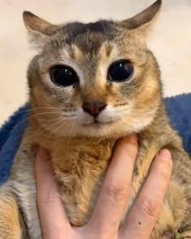

Bon, voilà comment va se présenter mon blog. Alors déjà, pourquoi un blog ? Simplement car l'année dernière je m'étais promis d'en tenir un, objectif que je n'ai pas accompli. Alors j'espère que celui là tiendrais au moins jusqu'à fin août ! Dedans je vais juste yap sur tout et rien, que ce soit ma vie, ce que j'ai fais cette journée, mes intérêts, des annectodes auquel je pense sur le coup etc etc . . . J'espère que ça vous plaira !
par contre pour l'image là j'ai mis meimei et wallah j'ai trop la flm de faire un bon rendu, contentez vous de ça, et les fautes d'orthographe c'est pareil wallah force à vous et vos yeux
